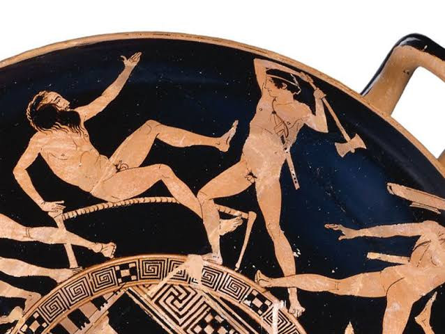

들어가며
프로크루스테스의 침대

테세우스와 프로크루스테스 — 아티카 적회식 킬릭스 (기원전 5세기경). 침대의 주인을, 침대에 눕히다
WOOD
나무
프로크루스테스의 침대
STEEL
강철
컨베이어 벨트의 속도
CODE
코드
알고리즘이 계산한 12분
그리고 이 신화의 결말 — 침대를 끝낸 것은
테세우스
였다. 기준을 만드는 자를, 그 기준 위에 올린 것이다.
마지막 장에서 다시 만난다.
침대는 조정되지 않는다 — 조정되는 것은 언제나 사람의 몸이다